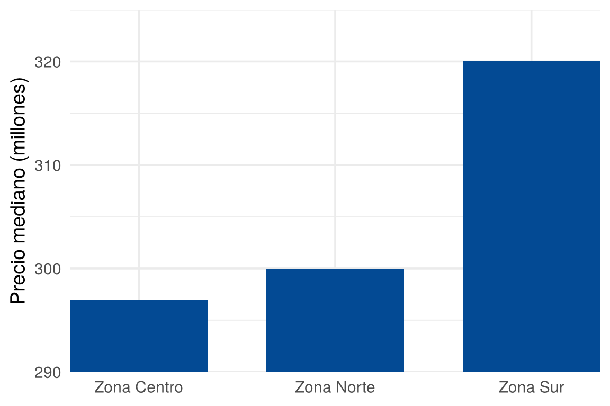
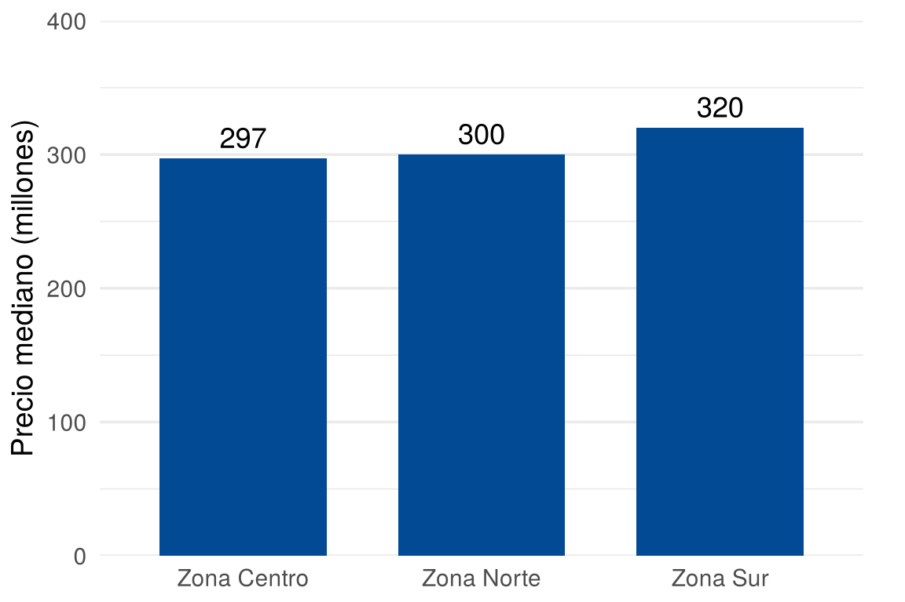
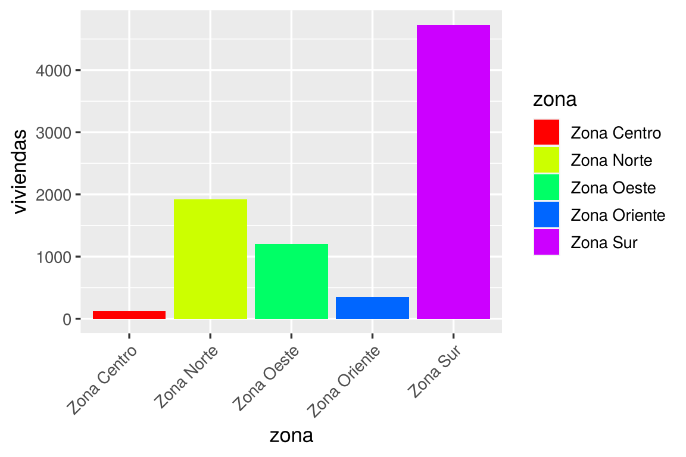
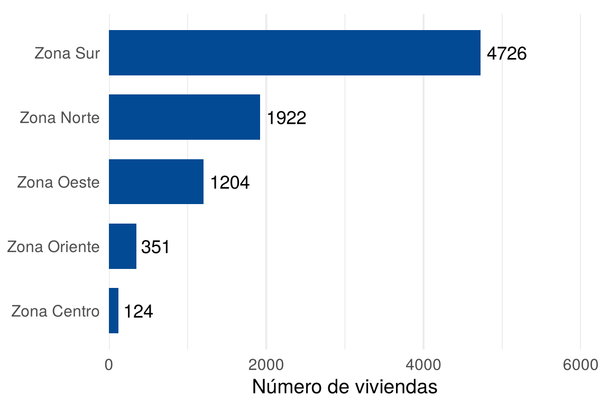
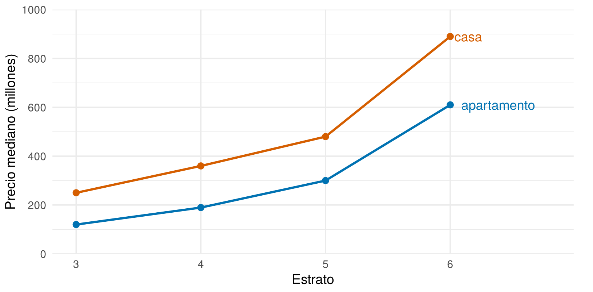
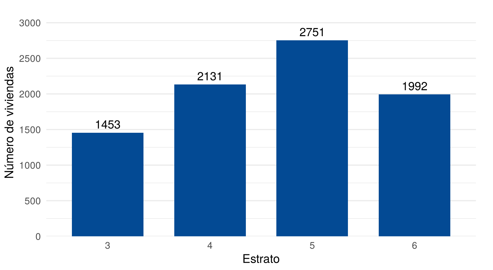

Un buen gráfico muestra los datos sin deformarlos, se entiende rápido y lo pueden leer todas las personas. Esta página reúne las recomendaciones de guías oficiales y compara versiones mal hechas y corregidas de los mismos datos. Al final hay una lista para revisar cualquier gráfico.
Esta página usa vivienda_faltantes, del paquete
paqueteMETODOS, y el paquete ggplot2. Los
bloques de código se ejecutan en orden, porque algunos usan objetos
creados en bloques anteriores.
library(paqueteMETODOS)
data("vivienda_faltantes")library(ggplot2)La longitud de una barra representa una cantidad. Si el eje se corta, las proporciones entre las barras se distorsionan (Government Analysis Function, 2022; Holtz y Healy).
El precio mediano de tres zonas es parecido:
medianas <- as.data.frame(tapply(vivienda_faltantes$preciom, vivienda_faltantes$zona,
median, na.rm = TRUE))
names(medianas) <- "mediana"
medianas$zona <- rownames(medianas)
parecidas <- subset(medianas, zona %in% c("Zona Centro", "Zona Norte", "Zona Sur"))
parecidas
mediana zona
Zona Centro 297 Zona Centro
Zona Norte 300 Zona Norte
Zona Sur 320 Zona SurEn la primera figura, el eje empieza en 290: la Zona Sur parece costar varias veces más. En la segunda, el eje empieza en cero y se ve la diferencia real, de unos 8 %.
ggplot(parecidas, aes(x = zona, y = mediana)) +
geom_col(fill = "#034A94", width = 0.7) +
coord_cartesian(ylim = c(290, 325), expand = FALSE) +
labs(x = NULL, y = "Precio mediano (millones)") +
theme_minimal(base_size = 14)
Versión engañosa: el eje empieza en 290
ggplot(parecidas, aes(x = zona, y = mediana)) +
geom_col(fill = "#034A94", width = 0.7) +
geom_text(aes(label = mediana), vjust = -0.5, size = 4.8) +
scale_y_continuous(limits = c(0, 400), breaks = seq(0, 400, 100), expand = c(0, 0)) +
labs(x = NULL, y = "Precio mediano (millones)") +
theme_minimal(base_size = 14) +
theme(panel.grid.major.x = element_blank(), plot.margin = margin(10, 20, 5, 5))
Versión correcta: el eje empieza en cero
Si las diferencias pequeñas son lo importante y no se quiere empezar en cero, se puede usar un gráfico de puntos en lugar de barras (Government Analysis Function, 2022).
| Efecto | Por qué evitarlo | Qué hacer | Fuente |
|---|---|---|---|
| 3D | Distorsiona la percepción y reduce la precisión | Usar gráficos planos | Holtz y Healy |
| Doble eje vertical | Puede malinterpretarse o manipularse | Hacer dos gráficos | Government Analysis Function, 2022 |
| Fondos, sombras y texturas | Distraen del mensaje | Dejar el diseño simple | Government Analysis Function, 2022 |
| Cuadrícula oscura | Compite con los datos | Usar gris claro y máximo diez líneas | Government Analysis Function, 2023 |
| Decimales de más | Agregan ruido | Dejar los necesarios | Holtz y Healy |
El color debe usarse solo cuando aporta información: para mostrar grupos, resaltar un elemento o representar un gradiente. Si no comunica nada, distrae, porque el lector intenta descifrar qué significa (Holtz y Healy).
zonas <- as.data.frame(table(vivienda_faltantes$zona))
names(zonas) <- c("zona", "viviendas")
ggplot(zonas, aes(x = zona, y = viviendas, fill = zona)) +
geom_col() +
scale_fill_manual(values = rainbow(5)) +
theme_gray(base_size = 13) +
theme(axis.text.x = element_text(angle = 45, hjust = 1))
Versión con colores decorativos
ggplot(zonas, aes(x = viviendas, y = reorder(zona, viviendas))) +
geom_col(fill = "#034A94", width = 0.7) +
geom_text(aes(label = viviendas), hjust = -0.15, size = 4.6) +
scale_x_continuous(limits = c(0, 6000), breaks = seq(0, 6000, 2000), expand = c(0, 0)) +
labs(x = "Número de viviendas", y = NULL) +
theme_minimal(base_size = 14) +
theme(panel.grid.major.y = element_blank(), plot.margin = margin(10, 20, 5, 5))
Versión corregida: un color, barras ordenadas y etiquetas
La versión corregida también ordena las barras, pone el texto horizontal y quita la leyenda, que no aportaba nada.
Según lo que se quiera mostrar, se escoge un tipo de paleta. Todas estas funciones vienen en R:
| Tipo de paleta | Cuándo se usa | Ejemplo en R |
|---|---|---|
| Categórica | Grupos sin orden, como sexo o zona | palette.colors(palette = "Okabe-Ito") |
| Ordenada | Grupos con orden, como el estrato | hcl.colors(4, "viridis") |
| Un solo color | Una sola variable | fill = "#034A94" |
La misma variable debe tener el mismo color en todos los gráficos de un documento (Analysis Function).
Cada gráfico necesita los elementos clave. Además, conviene seguir estas recomendaciones (Government Analysis Function, 2022 y 2023):
Las anotaciones llevan al lector al mensaje, y escribir los valores clave le evita hacer cálculos (Holtz y Healy). En esta figura, la etiqueta reemplaza a la leyenda:
datos <- subset(vivienda_faltantes, !is.na(preciom) & !is.na(estrato))
datos$tipo <- tolower(datos$tipo)
datos$tipo[datos$tipo == "apto"] <- "apartamento"
precios <- aggregate(preciom ~ estrato + tipo, data = datos, FUN = median)
nombres <- subset(precios, estrato == 6)
ggplot(precios, aes(x = estrato, y = preciom, color = tipo)) +
geom_line(linewidth = 1.1) +
geom_point(size = 2.8) +
geom_text(data = nombres, aes(label = tipo), hjust = -0.15, size = 4.8) +
scale_color_manual(values = c("apartamento" = "#0072B2", "casa" = "#D55E00"),
guide = "none") +
scale_x_continuous(limits = c(3, 6.8), breaks = 3:6) +
scale_y_continuous(limits = c(0, 1000), breaks = seq(0, 1000, 200), expand = c(0, 0)) +
labs(x = "Estrato", y = "Precio mediano (millones)") +
theme_minimal(base_size = 14) +
theme(panel.grid.minor.x = element_blank(), plot.margin = margin(10, 20, 5, 5))
Precio mediano por estrato, con etiquetas directas
Un gráfico accesible lo pueden entender personas con baja visión, con dificultad para distinguir colores o que usan lectores de pantalla.
| Recomendación | Por qué | Fuente |
|---|---|---|
| No depender solo del color | Hay quienes no distinguen esos colores | Lista de chequeo |
| Contraste de 3:1 en barras, líneas y otras partes necesarias | Es el mínimo para distinguirlas | W3C |
| Contraste de 4.5:1 en el texto | Es el mínimo para leerlo con facilidad | Analysis Function |
| Evitar líneas finas, barras delgadas y letra pequeña | Dificultan la lectura con baja visión | Analysis Function |
| Agregar una alternativa de texto | Un lector de pantalla no puede ver la imagen | Lista de chequeo |
En R Markdown, la alternativa de texto se escribe
con la opción fig.alt del bloque de código, y el pie de
figura con fig.cap. La descripción debe decir qué muestra
el gráfico, y no solo nombrarlo:
```{r, fig.cap="Viviendas por estrato", fig.alt="Cuatro barras; el estrato 5 es el mayor, con 2751 viviendas"}
ggplot(estratos, aes(x = estrato, y = viviendas)) + geom_col()
```Antes de usar un gráfico, conviene responder estas preguntas:
| Tema | Pregunta |
|---|---|
| Mensaje | ¿Se puede decir en pocas frases qué muestra? |
| Tipo | ¿Es el gráfico adecuado para la pregunta y las variables? |
| Ejes | ¿Los ejes contienen todos los datos? ¿Las barras empiezan en cero? |
| Unidades | ¿Están claras las unidades de medida? |
| Orden | ¿Las categorías están ordenadas por valor o por su orden propio? |
| Etiquetas | ¿El texto es horizontal y legible? |
| Color | ¿Cada color significa algo? ¿Se entiende sin el color? |
| Limpieza | ¿Sobra algún elemento, como bordes, fondos o decimales? |
| Fuente | ¿Se indica de dónde salen los datos? |
| Accesibilidad | ¿Tiene una descripción en texto? |
| Problema | Causa | Solución |
|---|---|---|
| Diferencias pequeñas parecen enormes | El eje de las barras no empieza en cero | Empezar en cero o usar puntos |
| Hay un color por categoría sin razón | Se escribió fill = variable por
costumbre |
Usar un solo color |
| Una leyenda repite el eje | ggplot2 la agrega al usar
fill |
Usar guide = "none" |
| El texto del eje está girado | Los nombres son largos | Usar barras horizontales |
| Las barras no se leen en blanco y negro | Los colores tienen la misma claridad | Agregar etiquetas o cambiar la paleta |
| La imagen no tiene descripción | Faltó fig.alt |
Escribir qué muestra el gráfico |
Indique qué problemas tiene la figura de los colores decorativos. Use la lista de revisión.
Las barras están en orden alfabético, los colores no significan nada, el texto del eje está girado, la leyenda repite los nombres, el fondo gris sobra, y los ejes no aclaran que se trata del número de viviendas.
Ejecute este código y corríjalo para que cumpla la lista de revisión:
ggplot(vivienda_faltantes, aes(x = factor(estrato), fill = factor(estrato))) +
geom_bar() +
coord_cartesian(ylim = c(1000, 3000))estratos <- as.data.frame(table(vivienda_faltantes$estrato))
names(estratos) <- c("estrato", "viviendas")
ggplot(estratos, aes(x = estrato, y = viviendas)) +
geom_col(fill = "#034A94", width = 0.7) +
geom_text(aes(label = viviendas), vjust = -0.5, size = 4.8) +
scale_y_continuous(limits = c(0, 3200), breaks = seq(0, 3000, 500), expand = c(0, 0)) +
labs(x = "Estrato", y = "Número de viviendas") +
theme_minimal(base_size = 14) +
theme(panel.grid.major.x = element_blank(), plot.margin = margin(10, 20, 5, 5))
Número de viviendas por estrato
Se quitó el eje cortado, se usó un solo color porque el eje ya indica el estrato, y se agregaron nombres y etiquetas.
Escriba una descripción para la figura de la versión corregida de las zonas.
Una descripción posible es: Gráfico de barras horizontales ordenadas de mayor a menor. La Zona Sur tiene 4726 viviendas, y le siguen Norte con 1922, Oeste con 1204, Oriente con 351 y Centro con 124.
palette.colors() y hcl.colors().Última revisión: 5 de noviembre de 2026.